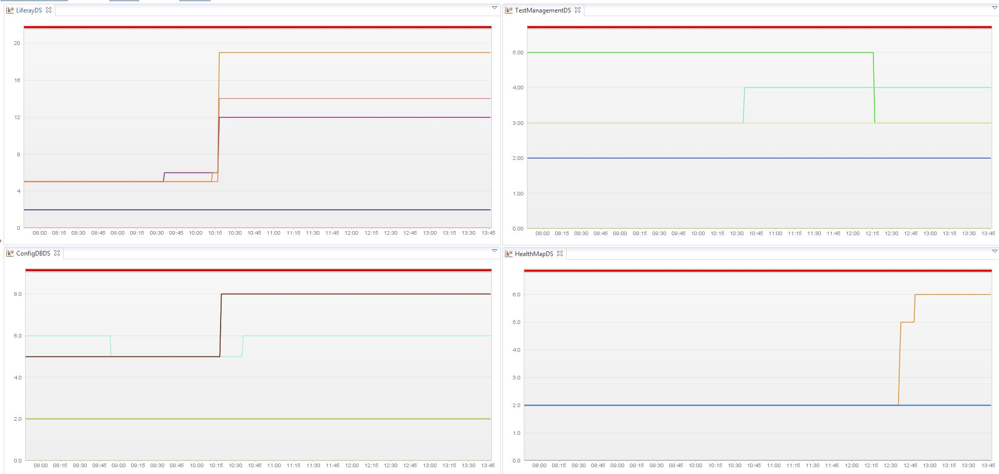

Starting "Jboss 7" or "Jboss EAP 6", Jboss has stopped the support for exposing connection pool statistics via JMX beans. If you want to use the dynaTrace JMX based measure to monitor your datasource usage/statistics you wont be able to do so.This plugin will help you capture the datasource statistics in "Jboss 7" or "Jboss EAP 6" using the new REST based Jboss management console. Once you capture the measure you can chart on the data.
Here is a screen shot of a dashboard, which monitors the active Connection on individual data-sources.
|
 |
|
Plug-In Versions |
JBoss 7 Datasource Monitoring Plugin (compatible with dynaTrace 4.2+) |
|
Author |
Muthu Madialagan |
|
Download |
|
|
License |
|
|
Support |
Not Supported |
|
Known Problems |
|
|
Release History |
2013-05-08 Initial Release |
|
Name |
Value |
|
datasourceName |
Name of the datasource |
|
DSMeasure |
The datasource measure/statistics that you want to capture. |
|
jbossusername |
Jboss admin username |
|
jbosspassword |
Jboss admin password |
|
managementPort |
Jboss management console port |
Import the Plugin into the dynaTrace Server. For details how to do this please refer to the dynaTrace documentation.